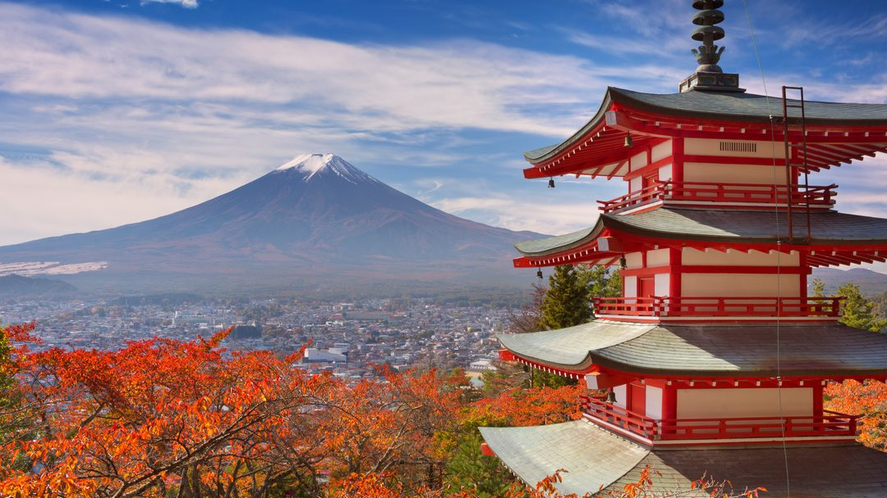
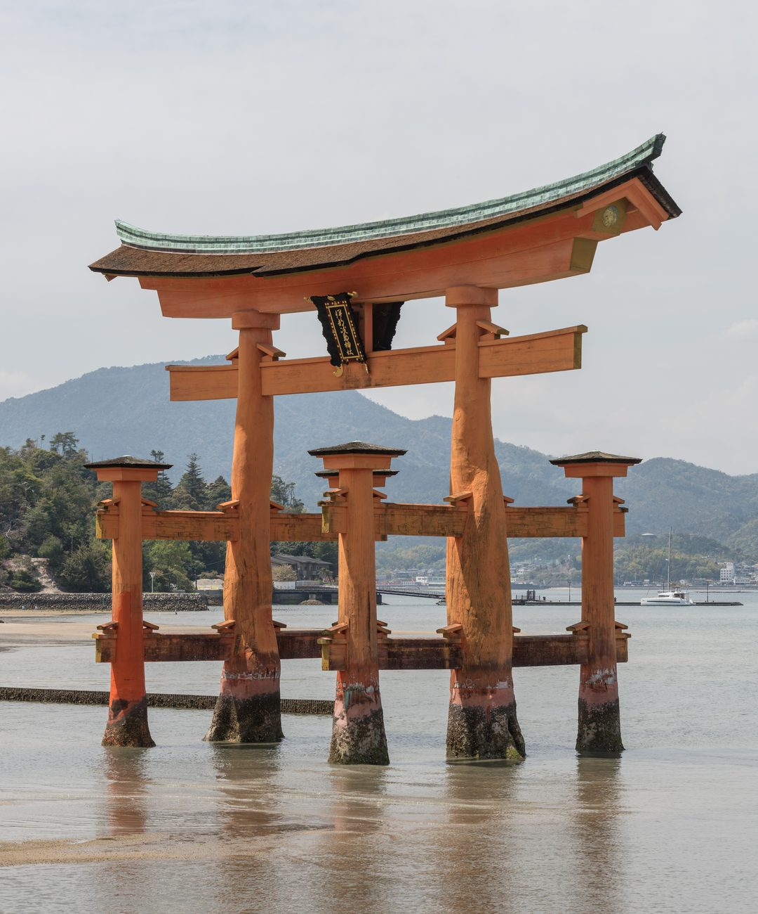
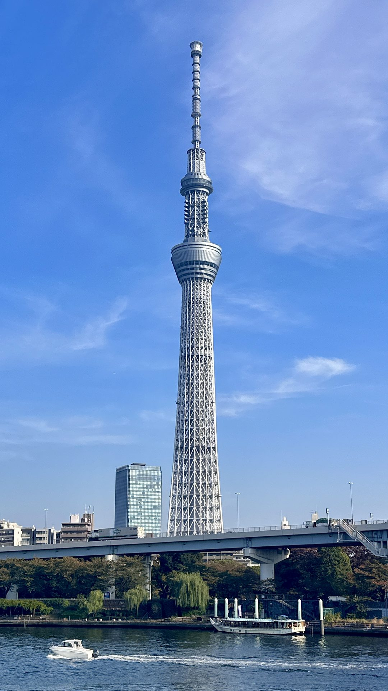
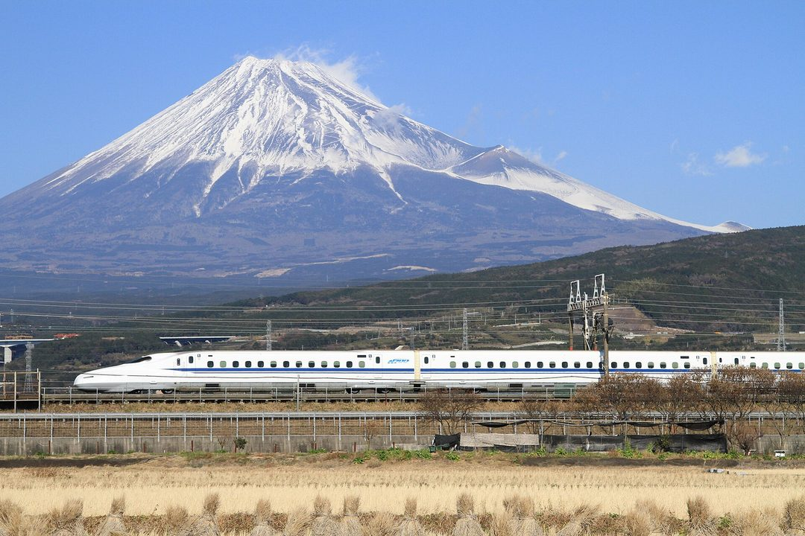

ICONS OF JAPAN
★ ＴＯＰ ５ ★
The five sights that say 'Japan' in a single glance — from the sacred summit to the train that rewrote travel.

NO.1
02

Itsukushima Floating Torii 厳島神社大鳥居
The great vermilion gate appears to float at high tide — a defining emblem of Japan's spiritual landscape.
03

Tokyo Skytree 東京スカイツリー
Opened 2012 at 634m, Japan's tallest structure; twin decks deliver sweeping views, often as far as Mt Fuji.
04
Kinkaku-ji Golden Pavilion 金閣寺
A three-story pavilion sheathed in gold leaf, mirrored in Kyokochi pond — one of Japan's most photographed temples.
05

Shinkansen Bullet Train 新幹線
Launched for the 1964 Tokyo Olympics; the world's first high-speed line and a byword for Japanese speed and punctuality.
Photos: free-license / CC (Wikimedia · Unsplash · Pexels) — placeholder stock; final = shop-supplied.